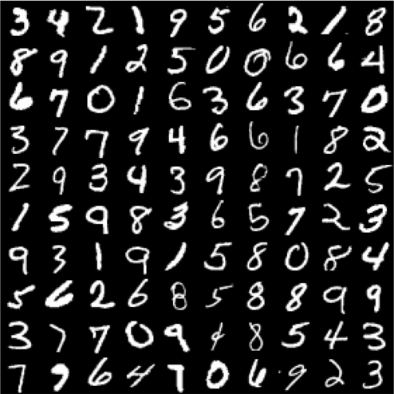
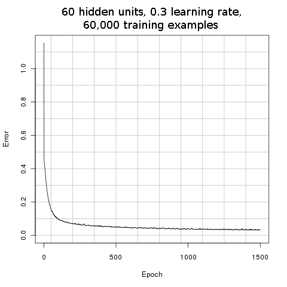
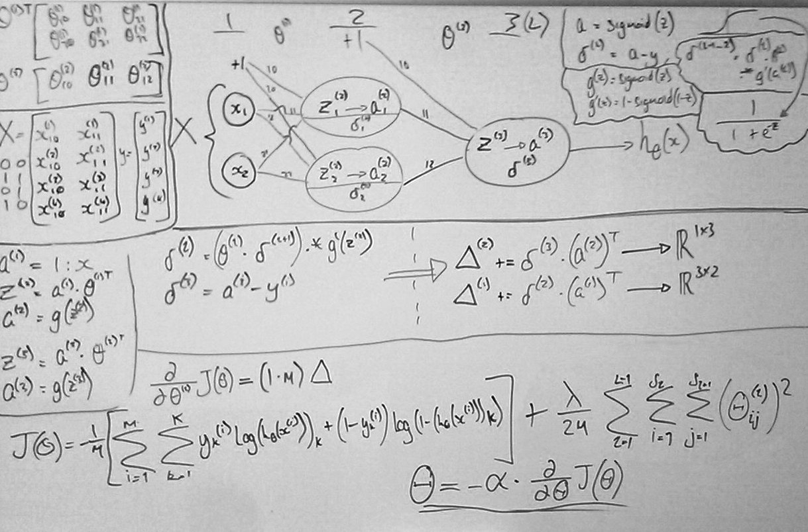
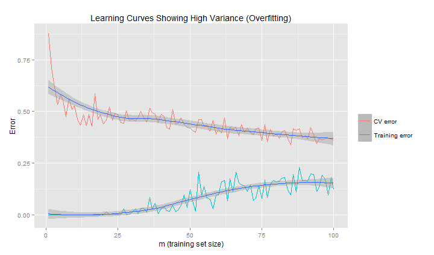
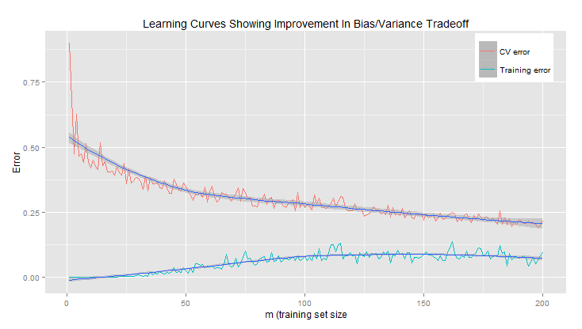

BSc AI & Robotics final project
Neural Net Digit Reader
A neural network, written from scratch in R, that teaches itself to read handwritten digits. Shown tens of thousands of examples, it reads digits it has never seen before with 95% accuracy. Humans manage 96% on the same images.

Overview
This was the final major project of my BSc in Artificial Intelligence and Robotics. The task was to build a standard neural network that could learn to tell the handwritten digits 0 to 9 apart, and then recognise digits it had never seen before.
I didn't use a machine learning library. Every part of the network, from making a guess to learning from its mistakes, is written by hand using R's matrix maths. That meant understanding each step well enough to make it work, not just calling a function that does it.
What the network does
- Look Each image is 28 by 28 pixels. The network reads it as a list of 784 numbers, one for how bright each pixel is.
- Weigh up A layer of 60 hidden units each look for their own combination of pixels, such as a curve or a stroke in a certain place.
- Answer Ten outputs, one per digit, each give a score for how likely the image is to be that digit. The highest score wins.
- Learn In training, the answer is compared with the right one and every connection is nudged so it does a little better next time.
- Language
- R
- Libraries
- None for the network itself; RUnit for the unit tests
- Data
- The MNIST handwritten digits: 60,000 training images and 10,000 test images
- Network
- 784 inputs, 60 hidden units, 10 outputs
- Training
- 1,500 rounds of gradient descent with a learning rate of 0.3
- Accuracy
- 95% on digits it had never seen (people: 96%)
The problem
Reading a digit is easy for a person and surprisingly hard to write a program for. Try writing down the rules for what makes a 7: a horizontal line at the top, then a diagonal down to the left. But some people cross their sevens, some curve the stroke, some write it so it looks like a 1, and some slant the whole thing. Every rule needs exceptions, and the exceptions need exceptions.
Machine learning turns the problem around. Instead of writing the rules, you collect a large number of examples with the right answers attached, and write a program that works out the rules for itself.
The dataset
MNIST is a standard set of handwritten digits used to test this kind of program. It was put together from forms filled in by US Census Bureau staff and secondary school students. Each image is a single digit, centred in a 28 by 28 pixel square, stored as white strokes on a black background. The people who wrote the 10,000 test digits are different from those who wrote the 60,000 training digits, so doing well on the test set means the network can read handwriting it has never come across.
How it works
A neural network is loosely modelled on how neurons in the brain connect. It's made of simple units arranged in layers, where every unit in one layer is connected to every unit in the next. Each connection has a weight: a number that says how much one unit's output should count towards the next unit's input, and whether it pushes it up or down.
When the network reads a digit, each pixel's brightness goes into one input. Each hidden unit adds up all 784 inputs, multiplied by the weights of its connections, and squashes the total into a number between 0 and 1. A high number means it has found the pattern it looks for. The output units do the same with the 60 hidden units' answers. Whichever output ends up highest is the network's answer.
Nobody tells the hidden units what to look for. At the start, every weight is a small random number, so the network's answers are no better than guesses. Everything it knows comes from adjusting those thousands of weights during training.
A few terms
- Weight
- A number on each connection that sets how strongly one unit affects the next. Learning means finding good weights.
- Hidden layer
- The units between the input and the output. They're "hidden" because nobody sets what they do; they find useful patterns on their own.
- Sigmoid
- The S-shaped function that squashes a unit's total into a number between 0 and 1.
- Error, or cost
- A single number for how wrong the network's answers are across all the examples. Training tries to make it as small as possible.
- Epoch
- One complete pass through all the training examples.
- Learning rate
- How big a step to take when adjusting the weights. Too big and it overshoots; too small and it takes forever.
How it learns
Training is a loop. The network is shown the training images, its answers are checked against the right ones, and every weight is adjusted slightly in whichever direction would have made the answers less wrong. Then it does it all again.
Step 3 is the clever part. Imagine standing on a hillside in thick fog, trying to get down to the valley. You can't see the bottom, but you can feel which way the ground slopes under your feet, so you take a step downhill and check again.
The error is the height of the hill, and the weights are your position on it. Backpropagation works out which way is downhill for every one of the 47,000 weights at once, and gradient descent takes the step. The learning rate is the length of your stride.

Working it out by hand
Before writing the code I worked through every step on a whiteboard, using a tiny network with two inputs, two hidden units and one output. It's small enough to follow each number through the forward pass, back again, and into the weight update, and to check the code against. It learns how to solve XOR; the simplest non-linear function.

Learning, not memorising
A network can get very good at the images it trains on without getting any better at reading digits in general. Given enough weights, it can simply remember the training images and their answers. This is called overfitting, and it is one of the most common pitfalls in machine learning.
It's like a student who memorises the answers to last year's exam paper. They'll score full marks if they're given the same paper again, but it says nothing about how they'll do on a new one.
To catch it, some of the labelled images are held back and never used for training. The network's error on these cross-validation images shows how well it copes with handwriting it hasn't seen. If the error on the training images is low but the error on the held-back images stays high, the network is memorising.
Reading the learning curves
A learning curve plots both errors as the network is given more and more training examples. In the graphs below, the red line is the error on the held-back images and the cyan line is the error on the training images. The smooth blue lines through each are the trend.


Plotting curves like these is how I tuned the network's settings, such as the number of hidden units and the learning rate, and decided how much training data it needed. When the two lines come together, the network has learned something it can use on handwriting it has never seen.
Results
Once trained, the network was tested on images from the MNIST test set, written by people whose handwriting it had never seen. It read 95% of them correctly.
95% The network, on digits it had never seen
96% People, reading the same dataset
That puts it within a point of a human reader. Some MNIST digits are hard for anyone to read, such as a 4 that looks like a 9 or a 7 that could be a 1, and you can spot a few in the hundred digits at the top of the page.
Looking back
The network was deliberately kept simple so that every part of it could be written and understood by hand. With hindsight, a few changes would make it faster and more accurate:
- It learns from the whole training set at once before every adjustment. Adjusting after small batches of images instead learns much faster.
- It measures error with the squared difference between its scores and the right answers. Cross-entropy, the cost function on the whiteboard, suits this kind of yes-or-no output better and speeds up learning.
- The pixel values go in as they are, from 0 to 255. Scaling them to between 0 and 1 first keeps the hidden units out of the flat ends of the sigmoid, where they learn slowly.
- A fully connected network treats the image as a flat list of numbers and doesn't know which pixels are next to each other. Convolutional networks, which look at small patches of the image at a time, read MNIST with over 99% accuracy.
Today, libraries like PyTorch build and train a network like this in a few lines. Writing it from scratch first is what makes those lines make sense.
The code
Each step of the network is a short R function in its own file, with unit tests for the pieces.
| File | What it does |
|---|---|
digit_recogniser.R | Loads the data, sets up the network, trains it, and reports its accuracy on the training and test sets |
load_mnist.R | Reads the images and labels from MNIST's binary files |
randInitWeights.R | Sets every weight to a small random number to begin with |
train.R | One forward pass to make the guesses, then backpropagation to work out each weight's share of the error |
gradientDescent.R | The training loop: calls train, records the error, and adjusts the weights, once per epoch |
cost.R | Measures how far the guesses were from the right answers |
predict.R | Reads a single image with the trained weights |
sigmoid.R | The squashing function and its slope, used in backpropagation |
splitTheta.R | Unpacks the long list of weights into one table for each layer |
tests/ | RUnit tests that check each function returns results of the right shape, and that the cost function gives the right value for known examples |
Running it
Download the four MNIST files into data/ as train_images,
train_labels, test_images and test_labels, and create
weights/ and img/ folders for the trained weights and the error graph.
Then, from the project folder in R:
source('digit_recogniser.R')
digit_recogniser(Hidden = 60, epochs = 1500, alpha = 0.3,
lambda = 1, epsilon = 0.12,
training_set_size = 50000,
cv_set_size = 10000,
test_set_size = 10000)
The trained weights are saved to weights/post_train_theta.csv, the error graph to
img/j.png, and every prediction, with the overall accuracy, to
train_predictions.txt and test_predictions.txt. To run the tests:
Rscript tests/runTest.R